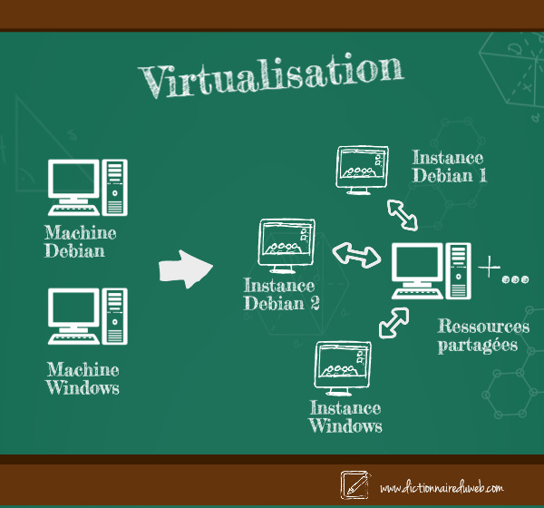

Projet de SAE 1.03 - Installation d’un poste pour le développement
Bienvenue sur notre rapport de synthèse pour le projet d' Installation d’un poste pour le développement. Ce site vous permet de découvrir toutes les étapes que nous avons faites pendant ce projet, et aussi tout ce qui est sur les machines virtuelles ; comment installer et créer un etc..
Sommaire de la presentation
Nous allons vous présenter ce que nous avons fait pour réaliser ce projet, en commençant par répondre à quelques questions techniques , puis vous présenter le type de virtualisation pour les environnements VirtualBox, VMWare Workstation et Stratus, etc. Et enfin, nous allons présenter la forme et lieu de sauvegarde de la machine virtuelle que nous avons créée avec les explications de tous les choix techniques possibles et justification de nos choix pendant la création de la machine virtuelle avec des copies d’écran.
Les Questions Techniques
Définition de la virtualisation
La virtualisation est une technologie qui permet de créer plusieurs environnements où ressources à partir d'un seul système physique.
La virtualisation donne la possibilité de créer des services informatiques utiles à l'aide de ressources qui sont généralement liées au matériel. Elle permet d'exploiter toute la capacité d'une machine physique en la répartissant entre de nombreux utilisateurs ou environnements différents.
Différence entre émulateur, simulateur et outil de virtualisation
Pour comprendre la différence entre émulateur, similateur et outil de virtualisation, d'abord il faut connaître les définitions de ces 3 termes.
Un émulateur reproduit le comportement d'un système matériel ou logiciel spécifique dans un autre environnement.
Le but des émulateurs est de créer des logiciels similaires au matériel et d'exécuter diverses données qui ne peuvent normalement s'exécuter que sur leur propre système dans d'autres environnements.
Un simulateur imite uniquement les fonctionnalités logicielles ou comportementales d'un système, sans recréer fidèlement le matériel sous-jacent.
Et la virtualisation , comme nous l'avons expliqué ci-dessus, il permet de diviser les ressources matérielles d'un seul ordinateur en plusieurs ordinateurs virtuels , appelés machines virtuelles (VM).
Donc la différence entre un émulateur, un simulateur et un outil de virtualisation réside dans leur manière de reproduire ou de gérer un système. L'émulateur imite à la fois le matériel et le logiciel d'une plateforme pour exécuter des applications conçues pour un autre environnement, le simulateur se concentre uniquement sur le comportement logiciel sans recréer le matériel, tandis que l'outil de virtualisation permet d'exécuter plusieurs systèmes isolés en partageant les ressources physiques d'un même matériel.